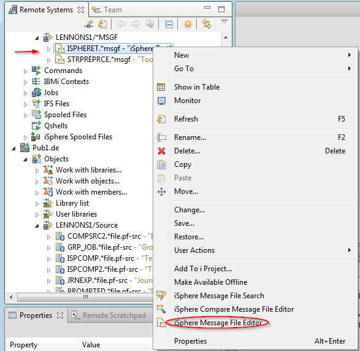
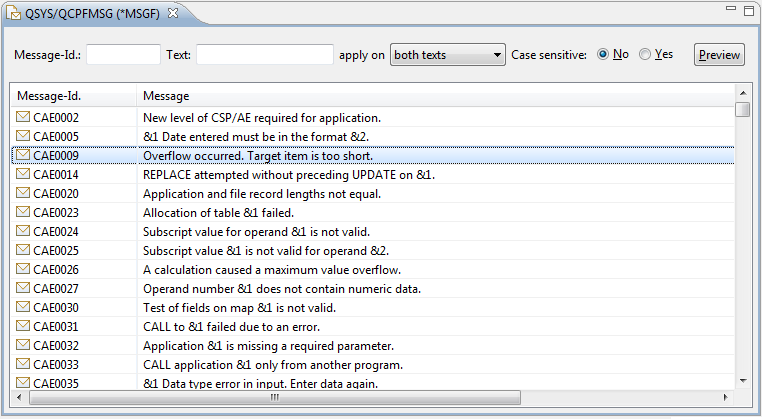
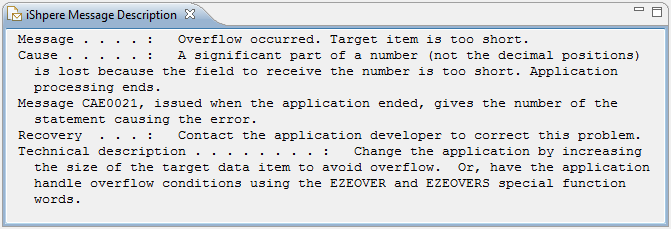
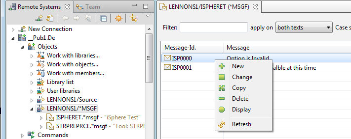
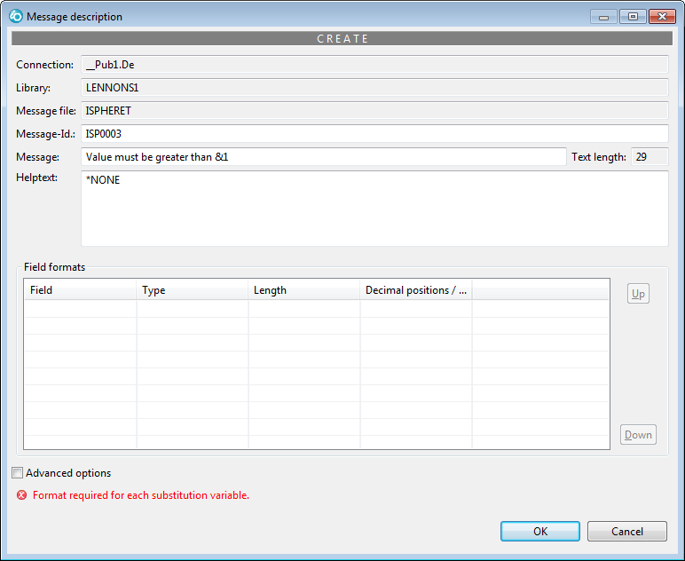
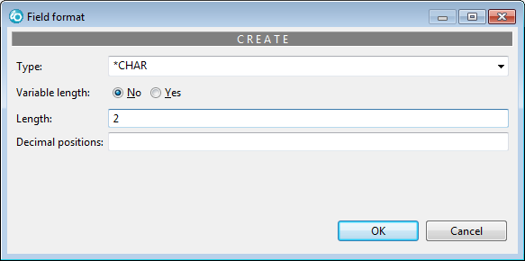
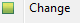
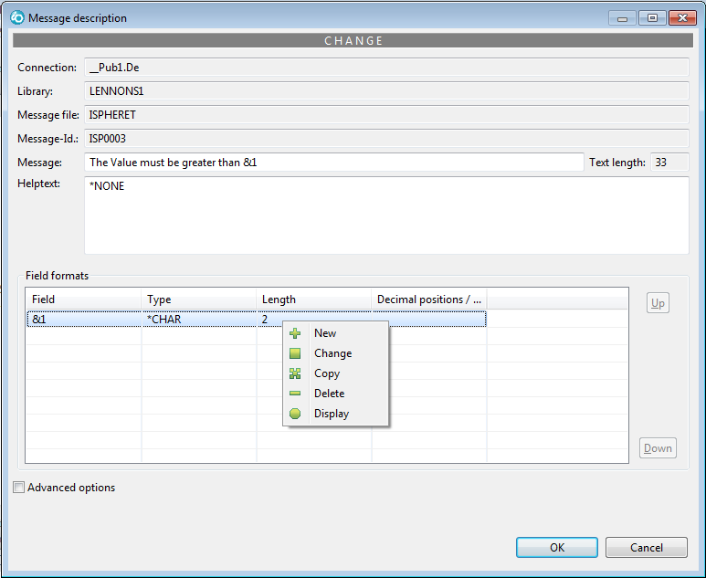

Message File Editor
The Message File Editor provides a fast and friendly way to edit message descriptions in a message
file. It allows you to preview the messages.
To edit message descriptions:
- In the Remote Systems Explorer open the context menu of a message file (right
click on it) .

- Select menu item "iSphere Message File Editor" to see a list
of messages in the message file.

The [Preview] button opens the iSphere Message Description
view. Now you can click on any message a see a preivew.

Use the context menu (right click) on a message description to
bring up a maintenance menu:

Adding a new message
Click
to bring up the 'Create" dialog
Enter the new message
Click [OK]

If you have substitution variable in the message you must define them
before the message can be saved.
Right click anywhere in the
the "Field formats" section, then click the [+ New] button
that appears to bring ou the "Field format" "Create" dialog.
Define the substitution field(s).
Click [OK]

When all substition variable have been defined, click [OK] to
add the message.
Changing a message
Right click on the message to be changed.
Click

to bring up the "Change" dialog
or
Double click the message to be changed
Make the changes.
If you need to change a substitution variable, right click in
the row in the "Field formats" section.

Copying a message
The "copy" dialog is very similar to adding a new message, except that
existing data is populated.
You must change the Message Id.
You can
change any of the other fields that may be edited.